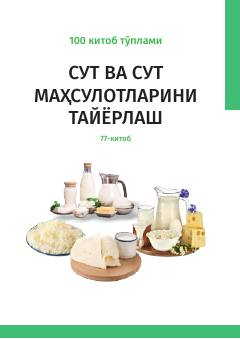

SVSut va sut mahsulotlarini ilmiy asosda tayyorlash bo'yicha amaliy qo'llanma.
Ushbu qo'llanma sut va sut mahsulotlarini tayyorlash texnologiyalari haqida ilmiy va amaliy ma'lumotlarni o'z ichiga oladi. Kitobda ichimlik suti, qaymoq, sariyog', pishloq, brinza, nordon sut mahsulotlari va sut konservalari ishlab chiqarish usullari batafsil yoritilgan. Qo'llanma 'Agrobank' ATB tomonidan 100 kitoblik to'plam doirasida nashr etilgan bo'lib, fermerlar va mutaxassislarga mo'ljallangan.